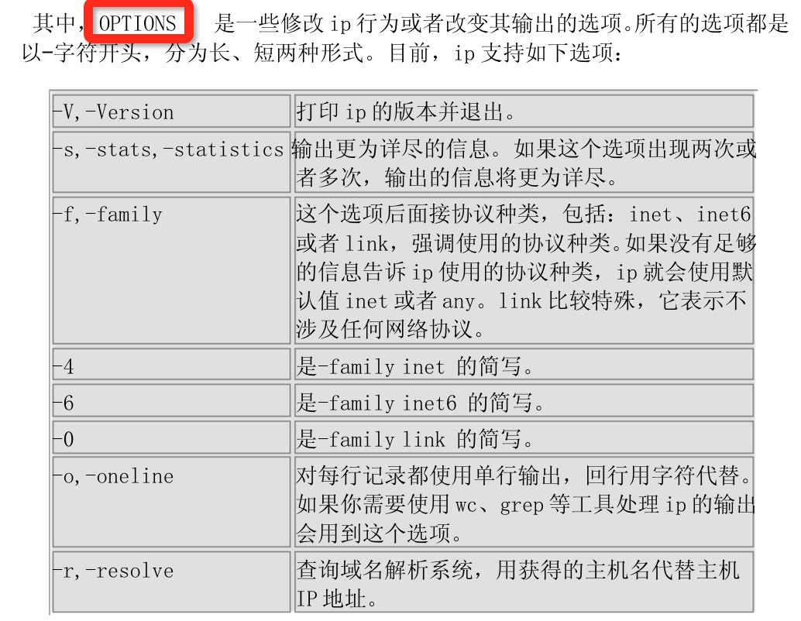

纸上得来终觉浅，绝知此事要躬行。
每台计算机主机连入 internet 都必须给主机设定以个合法的 IP 地址。这些 IP 参数大概包括 IP 地址、子网掩码、网关、路由、DNS 等。在 Linux 中，大多数命令配置网络配置都是临时生效，想要网络服务永久有效就必须写入配置文件中，所以有时候更改配置重启主机是为了让内核重读配置文件到内核中，因为配置文件属于用户空间的文件。大多数网络配置都是临时生效。
1. 网络基础知识
1.1 MAC 地址
MAC（Medium/Media Access Control）地址，用来表示互联网上每一个站点的标识符，采用十六进制数表示，共六个字节（48 位）。其中，前三个字节是由 IEEE 的注册管理机构 RA 负责给不同厂家分配的代码(高位 24 位），也称为“编制上唯一的标识符”，后三个字节(低位 24 位)由各厂家自行指派给生产的适配器接口，称为扩展标识符（唯一性）。一个地址块可以生成 224 个不同的地址。
MAC 地址与 IP 地址区别
- 相同点 - IP 地址和 MAC 地址相同点是它们都唯一
- 不同点 - 对于网络上的某一设备，如一台计算机或一台路由器，其 IP 地址是基于网络拓扑设计出的，同一台设备或计算机上，改动 IP 地址是很容易的（但必须唯一），而 MAC 则是生产厂商烧录好的，一般不能改动。我们可以根据需要给一台主机指定任意的 IP 地址，如我们可以给局域网上的某台计算机分配 IP 地址为 192.168.0.112 ，也可以将它改成 192.168.0.200。而任一网络设备（如网卡，路由器）一旦生产出来以后，其 MAC 地址不可由本地连接内的配置进行修改。如果一个计算机的网卡坏了，在更换网卡之后，该计算机的 MAC 地址就变了。 - 长度不同。IP 地址为 32 位，MAC 地址为 48 位。 - 分配依据不同。IP 地址的分配是基于网络拓扑，MAC 地址的分配是基于制造商。 - 寻址协议层不同。IP 地址应用于 OSI 第三层，即网络层，而 MAC 地址应用在 OSI 第二层，即数据链路层。 数据链路层协议可以使数据从一个节点传递到相同链路的另一个节点上（通过 MAC 地址），而网络层协议使数据可以从一个网络传递到另一个网络上（ARP 根据目的 IP 地址，找到中间节点的 MAC 地址，通过中间节点传送，从而最终到达目的网络）。
1.2 IP 地址
IP是英文 Internet Protocol 的缩写，意思是“网络之间互连的协议”，也就是为计算机网络相互连接进行通信而设计的协议。在因特网中，它是能使连接到网上的所有计算机网络实现相互通信的一套规则，规定了计算机在因特网上进行通信时应当遵守的规则。任何厂家生产的计算机系统，只要遵守 IP 协议就可以与因特网互连互通。正是因为有了 IP 协议，因特网才得以迅速发展成为世界上最大的、开放的计算机通信网络。因此，IP 协议也可以叫做“因特网协议”。
IP 地址被用来给 Internet 上的电脑一个编号。大家日常见到的情况是每台联网的 PC 上都需要有 IP 地址，才能正常通信。我们可以把“个人电脑”比作“一台电话”，那么“IP 地址”就相当于“电话号码”，而 Internet 中的路由器，就相当于电信局的“程控式交换机”。
IP 地址采用点分十进制
- 0-255
- 0000 0000 - 1111 1111
- 0.0.0.0-255.255.255.255
IPv4 地址分类
A 类 -
0000 0000 - 0 111 1111: 1-127 - 网络数：126, 127 - 每个网络中的主机数：2^24-2 - 默认子网掩码：255.0.0.0 - 私网地址：10.0.0.0/8B 类 -
1000 0000 - 10 11 1111：128-191 - 网络数：2^14 - 每个网络中的主机数：2^16-2 - 默认子网掩码：255.255.0.0 - 私网地址：172.16.0.0/16-172.31.0.0/16C 类 -
1100 0000 - 110 1 1111: 192-223 - 网络数：2^21 - 每个网络中的主机数：2^8-2 - 默认子网掩码：255.255.255.0 - 私网地址：192.168.0.0/24-192.168.255.0/24D 类 ==> 组播 -
11100000 - 1110 1111: 224-239E 类 - 240-255
1.3 OSI 七层模型

1.4 IP 五层模型
1.5 网络设备
2. 网络管理命令
2.1 ifconfig命令
格式：ifconfig [-v] [-a] [-s] [interface]ifconfig [-v] interface [aftype] options | address ...
常用参数：
-a
显示全部接口信息netmask<子网掩码>
设置网卡的子网掩码up
启动指定网络设备/网卡down
关闭指定网络设备/网卡-s
显示摘要信息（类似于netstat -i）mtu<字节数>
设置网卡的最大传输单元 (bytes)-promisc
启用混杂模式，如果选择此参数，网卡将接收网络中发给它所有的数据包-allmulti
启用多播模式，如果选择此参数，网卡将接收网络中所有的多播数据包
日常使用：
# 显示所有网卡信息
ifconfig -a
# 启用或者关闭某个网卡
ifconfig IFACE [up|down]
# 临时设定指定网卡的IP地址及其MASK信息
ifconfig IFACE IP netmask MASK
ifconfig IFACE IP/mask [up]实战演示：
# 处于激活状态的网络接口
ifconfig
# 所有配置的网络接口，不论其是否激活
ifconfig -a
# 显示eth0的网卡信息
ifconfig eth0
# 关闭eth0网卡
ifconfig eth0 down
# 开启eth0网卡
ifconfig eth0 up
# 修改MAC地址
ifconfig eth0 hw ether 00:AA:BB:CC:DD:EE
# 给eth0网卡配置IP地址
ifconfig eth0 192.168.1.56
# 给eth0网卡配置IP地址,并加上子掩码
ifconfig eth0 192.168.1.56 netmask 255.255.255.0
# 给eth0网卡配置IP地址,加上子掩码,加上个广播地址
ifconfig eth0 192.168.1.56 netmask 255.255.255.0 broadcast 192.168.1.255
# 设置能通过的最大数据包大小为 1500 bytes
ifconfig eth0 mtu 1500
# 开启arp功能
ifconfig eth0 arp
# 关闭arp功能
ifconfig eth0 -arpNote：
- 执行之后会立即生效
- 启动和关闭还可以使用
ifup/ifdown命令来完成
2.2 route命令
格式：route [option] ...
参数选项：
del
删除一条路由add
添加一条路由target
指定目标网络或主机，可以用点分十进制形式的 IP 地址或主机/网络名netmask Nm
为添加的路由指定网络掩码gw Gw
为发往目标网络/主机的任何分组指定网关
注意，指定的网关首先必须是可达的，也就是说必须为该网关预先指定一条静态路由，如果你为本地接口之一指定这个网关地址的话，那么此网关地址将用于决定此接口上的分组将如何进行路由-n
以数字形式代替解释主机名形式来显示地址，此项对试图检测对域名服务器进行路由发生故障的原因非常有用-v
选用细节操作模式-A family
用指定的地址族(如inet，net6)-net
路由目标为网络-host
路由目标为主机-C
显示内核的路由缓存reject
设置一条阻塞路由以使一条路由查找失败。这用于在使用缺省路由前先屏蔽掉一些网络，但这并不起到防火墙的作用dev If
强制使路由与指定的设备关联，因为否则内核会自己来试图检测相应的设备(通常检查已存在的路由和加入路由的设备的规格)。在多数正常的网络上无需使用。如果 dev If 是命令行上最后一个指定的选项，那么可以省略关键字 dev，因为它是缺省值。否则路由修改对象(metric - netmask- gw - dev)无关紧要。
日常使用
# 添加路由
route add [-net|-host] target [netmask Nm] [gw Gw] [[dev] If]
# 目标：192.168.1.3 网关：172.16.0.1
route add -host 192.168.1.3 gw 172.16.0.1 dev eth0
# 目标：192.168.0.0 网关：172.16.0.1
route add -net 192.168.0.0 netmask 255.255.255.0 gw 172.16.0.1 dev eth0
route add -net 192.168.0.0/24 gw 172.16.0.1 dev eth0
# 默认路由，网关：172.16.0.1
route add -net 0.0.0.0 netmask 0.0.0.0 gw 172.16.0.1
route add default gw 172.16.0.1# 删除路由
route del [-net|-host] target [gw Gw] [netmask Nm] [[dev] If]
# 目标：192.168.1.3 网关：172.16.0.1
route del -host 192.168.1.3
# 目标：192.168.0.0 网关：172.16.0.1
route del -net 192.168.0.0 netmask 255.255.255.0实战演示：
# 显示当前路由
route
Kernel IP routing table
Destination Gateway Genmask Flags Metric Ref Use Iface
192.168.0.0 * 255.255.255.0 U 0 0 0 eth0
default 192.168.0.1 0.0.0.0 UG 0 0 0 eth0
# 删除默认网关
route del default gw 192.168.0.1
# 添加默认网关
route add default gw 192.168.0.1
# 增加一条路由
route add -net 224.0.0.0 netmask 240.0.0.0 dev eth0
# 屏蔽一条路由
route add -net 224.0.0.0 netmask 240.0.0.0 reject
#所有去往192.168.0.2主机的数据包发往网关地址192.168.0.1
route add -host 192.168.0.2 gw 192.168.0.12.3 netstat命令
格式：route [option] ...
参数选项：
显示网络连接
常用组合：-tan,-uan,-tnl,-unl--t
tcp 协议相关 --u
udp 协议相关 --w
raw socket 相关 --l
处于监听状态 --a
所有状态 --n
以数字显示 IP 和端口 --e
扩展格式 --p
显示相关进程及 PID显示路由表
netstat {--route|-r} [--numeric|-n]--r
显示内核路由表 --n
数字格式显示接口统计数据
netstat {--interfaces|-I|-i} [iface] [--all|-a] [--extend|-e] [--program|-p] [--numeric|-n]-netstat -i-netstat -I IFACE
实战演示：
# 列出所有端口 (包括监听和未监听的)
netstat -a | more
# 列出所有TCP端口
netstat -at
# 列出所有UDP端口
netstat -au
# 显示核心路由信息
netstat -r
# 显示网络接口列表
netstat -i
# 显看已连接的TCP端口，以及PID
netstat -tpnl
# 查看连接某服务端口最多的的IP地址
netstat -nat | grep "192.168.1.110:22" |awk '{print $5}'|awk -F: '{print $1}'|sort|uniq -c|sort -nr|head -20
# 查看3306端口(mysql)的链接数
netstat -anp |grep 3306 -c
# 找出运行在指定端口的进程
netstat -alp|grep 80802.4 ip命令
ip- show / manipulate routing, devices, policy routing and tunnels
格式：ip [ OPTIONS ] OBJECT { COMMAND | help }
- OPTIONS :=
{ -V[ersion] | -s[tatistics] | -r[esolve] | -f[amily] { inet | inet6 | ipx | dnet | link } | -o[neline] } - OBJECT :=
{ link | addr | addrlabel | route | rule | neigh | ntable | tunnel | tuntap | maddr | mroute | mrule | monitor | xfrm | netns | l2tp | tcp_metrics } - COMMAND - 增加(
add) - 删除(delete) - 展示(show或者list)

2.4.1 OBJECT ：link ==> 管理连接的
ip [ OPTIONS ] link { COMMAND | help }ip link是和 OSI 七层协议的第二层数据链路层有关 - OPTIONS :={ -V[ersion] | -s[tatistics] | -r[esolve] | -f[amily] { inet | inet6 | ipx | dnet | link } | -o[neline] }- TYPE :=[ bridge | bond ] can | dummy | hsr | ifb | ipoib | macvlan | macvtap | vcan | veth | vlan | vxlan | ip6tnl | ipip | sit | gre | gretap | ip6gre | ip6gretap ]添加
ip link add[ link DEVICE ] [ name ] NAME [ address LLADDR ] [ broadcast LLADDR ] [ mtu MTU ] type TYPE [ ARGS ]-DEVICE
指定接口 -name
指定名称 -address
指定地址 -broadcast
指定广播地址 -mtu
指定 MTU 的值 -TYPE
指定类型删除
ip link deleteDEVICE type TYPE [ ARGS ]-DEVICE
指定接口 -TYPE
指明类型设置
ip link set{ DEVICE | group GROUP } { up | down | arp { on | off } | name NEWNAME | address LLADDR | broadcast LLADDR | mtu MTU}-DEVICE
指定接口 -up
启用指定设备 -down
禁用指定设备 -arp
arp 功能是否启用 -name
指定新名称 -address
指定新的地址 -broadcast
指定新的广播地址 -mtu
指定 MTU 的值显示
ip link show[ DEVICE | group GROUP ] [up]-DEVICE
指定接口 -up
仅显示处于激活状态的接口
实战演示：
# 显示系统网络接口的情况
ip link show
# 改变ppp0设备的MTU值
ip link set dev ppp0 mtu 1400
# 创建一个新的网络设备eth0，指明设备名称和类型及ID号
ip link add link eth0 name eth0.10 type vlan id 10
# 删除设备
ip link delete dev eth0.101. 启动、关闭和设置
# 启动 eth0
ip link set eth0 up
# 关闭
ip link set eth0 down
# 更改MTU的值为1000bytes，使用ifconfig也能更新网卡的MTU
ip link set eth0 mtu 1000
2. 修改网卡代号、MAC等参数，设置前得要先关闭该网卡
# 设备的硬件相关信息，包括MTU、MAC及传输的模式等，都能在这里设置。
# address的项目后接的可是MAC而不是IP
ip link set eth0 name vbird
ip link set eth0 down
ip link set vbird name eth02.4.2 OBJECT ：address ==> 管理地址的
ip [ OPTIONS ] address { COMMAND | help }IP address（IP addr）就是和第三层网络层有关 - IFADDR :=PREFIX | ADDR peer PREFIX [ broadcast ADDR ] [ anycast ADDR ] [ label STRING ] [ scope SCOPE-ID ]-[label LABEL]：添加地址时指明网卡别名 -[scope {global|link|host}]：指明作用域 -[broadcast ADDRESS]：指明广播地址 - SCOPE-ID :=[ host | link | global | NUMBER ]-global: 全局可用 -link: 仅链接可用 -host: 本机可用添加或者删除地址
ip address { add | del }IFADDR dev STRING-add
添加单个地址信息 -del
删除单个地址信息
- 查看或者清空地址
ip address { show | flush }[ dev STRING ] [ label PATTERN ]-show
显示地址信息 -flush
清空地址信息 -label
添加地址时指明网卡别名
替换
ip address replaceNEW_ADDRESS [ dev STRING ]- 一般会对设备进行清空之后在做替换，因为没有指明替换地址而执行命令，则会再次添加一个地址到设备上 -ip address replace 172.16.100.14/16 dev eth0显示
ip address show[dev DEVICE] [label PATTERN] [primary and secondary]-[dev DEVICE]：指定设备 -[label PATTERN]：指明卷标
实战演示：
# 显示eth0的地址信息
ip address show dev eth0
# 对eth0添加新的地址，如果eth0之前没有地址则指定地址，如果之前有地址则会原有的地址之上添加新地址
ip address add 172.16.100.13/16 dev eth0
# 清空eth4上所有的地址
ip address flush dev eth4# 新增一个接口，名称为 eth0:vbird
ip address add 192.168.50.50/24 broadcast 192.168.50.255 dev eth0 label eth0:vbird
# ip address show eth0
2: eth0: mtu 1500 qdisc pfifo_fast qlen 1000
link/ether 00:40:d0:13:c3:46 brd ff:ff:ff:ff:ff:ff
inet 192.168.1.100/24 brd 192.168.1.255 scope global eth0
inet 192.168.50.50/24 brd 192.168.50.255 scope global eth0:vbird
# 如果使用 ifconfig 就能够看到之前设定的接口
# ifconfig
eth0:vbir Link encap:Ethernet HWaddr 00:40:D0:13:C3:46
inet addr:192.168.50.50 Bcast:192.168.50.255 Mask:255.255.255.0
UP BROADCAST RUNNING MULTICAST MTU:1500 Metric:1
Interrupt:5 Base address:0x3e002.4.3 OBJECT ：route ==> 管理路由的
添加
ip route addTARGET via GW dev IFACE src SOURCE_IP
添加网关：ip route add defalt via GW dev IFACETARGET- 主机路由：IP- 网络路由：NETWORK/MASK删除
*ip route deleteTARGET*显示
ip route show清空
ip route flush[dev IFACE] [via PREFIX]
实战演示：
# 增加路由
# 主要是本机直接可沟通的网段，针对本机直接沟通的网段设置好路由，不必通过外部的路由器
ip route add 192.168.5.0/24 dev eth0
# 增加能通往外部的路由
# 因为有 192.168.5.0/24 的路由存在 (和网卡直接联系)，所以才能将 192.168.10.0/24 的路由丢给 192.168.5.100 这台主机来帮忙传递
ip route add 192.168.10.0/24 via 192.168.5.100 dev eth0
# 增加默认路由
# 那个 192.168.1.2 是默认路由器 (gateway) 的意思，就是只要一个默认路由就可以了
ip route add default via 192.168.1.2 dev eth0
# 删除路由
ip route del 192.168.10.0/24
ip route del 192.168.5.0/242.5 ss 命令
ss是类似 netstat 的工具，能显示查看网络状态信息，包括 TCP、UDP 连接、端口等信息。
格式：ss [OPTION]... [FILTER]
FILTER:=[ state TCP-STATE ] [ EXPRESSION ]- TCP 的常见状态 -LISTEN: 监听 -ESTABLISHED：建立 -FIN_WAIT_1-FIN_WAIT_2-SYN_SENT-SYN_RECV-CLOSED: 关闭- **EXPRESSION** - `dport =` - `sport =` - 示例：`dport = :ssh` or `sport = :ssh`
OPTION： --t
tcp 协议相关 --u
udp 协议相关 --w
裸套接字相关 --x
unix sock 相关 --l
listen 状态的连接 --a
显示所有网络连接 --n
数字格式 --p
相关的程序及 PID --e
扩展的信息 --m
内存用量 --s
连接统计 --o
计时器信息 --4
只显示 IPV4 信息
实战演示：
# 查看所有的tcp连接
ss -t -a
# 查看所有的udp连接
ss -u -a
# 显示LISTEN状态的进程信息
ss -pl
# 显示连接X服务器的进程
ss -x src /tmp/.X11-unix/*3. 修改配置文件
3.1 IP、MASK、GW、DNS相关配置文件
文件路径
/etc/sysconfig/network-scripts/ifcfg-IFACE- 设置完毕配置之后使之生效需重启服务
配置文件书写格式
DEVICE
此配置文件应用到的设备HWADDR
对应的设备的 MAC 地址IPADDR
指明 IP 地址NETMASK
子网掩码GATEWAY
默认网关DNS1
第一个 DNS 服务器指向DNS2
第二个 DNS 服务器指向BOOTPROTO
激活此设备时使用的地址配置协议，常用的dhcp,static,none,bootpNM_CONTROLLED
NM 是NetworkManager的简写，此网卡是否接受 NM 控制，CentOS6 建议为noONBOOT
在系统引导时是否激活此设备TYPE
接口类型，常见有的Ethernet,BridgeUUID
设备的惟一标识USERCTL
普通用户是否可控制此设备，yes表示允许，no表示不允许PEERDNS
如果BOOTPROTO的值为dhcp，是否允许dhcp server分配的dns服务器指向信息直接覆盖至/etc/resolv.conf文件中，yes表示允许，no表示不允许
实战演示
# 以下操作仅限于CentOS 6中
# ls /etc/sysconfig/network-scripts/
ifcfg-eth0 ifdown-eth ifdown-ppp ifup-aliases ifup-isdn ifup-routes net.hotplug
ifcfg-eth1 ifdown-ippp ifdown-routes ifup-bnep ifup-plip ifup-sit network-functions
ifcfg-lo ifdown-ipv6 ifdown-sit ifup-eth ifup-plusb ifup-tunnel network-functions-ipv6
ifdown ifdown-isdn ifdown-tunnel ifup-ippp ifup-post ifup-wireless
ifdown-bnep ifdown-post ifup ifup-ipv6 ifup-ppp init.ipv6-global
# cat ifcfg-eth0
# XenSystem Ethernet
DEVICE=eth0
BOOTPROTO=static
IPADDR=122.10.117.93
NETMASK=255.255.255.128
GATEWAY=122.10.117.126
onboot=YESDNS 服务器指定
/etc/resolv.conf
nameserver DNS_SERVER_IP1
nameserver DNS_SERVER_IP2
nameserver DNS_SERVER_IP3
# cat /etc/resolv.conf
nameserver 8.8.8.8
nameserver 8.8.4.43.2 路由相关的配置文件
文件路径：
/etc/sysconfig/network-scripts/route-IFACE- 默认在此目录下没有相关的配置文件，需手动创建
两种风格
- (1) 每一行定义一条路由 -
TARGET via GW - (2) 每三行定义一条路由 -
ADDRESS#=TARGET-NETMASK#=mask-GATEWAY#=GW#为哪一条路由，一般为数字 1、2、3
实战演示
# route -n
Kernel IP routing table
Destination Gateway Genmask Flags Metric Ref Use Iface
122.10.117.0 0.0.0.0 255.255.255.128 U 0 0 0 eth0
169.254.0.0 0.0.0.0 255.255.0.0 U 1002 0 0 eth0
0.0.0.0 122.10.117.126 0.0.0.0 UG 0 0 0 eth0
# 第一种路由添加方式，之后需重启网络
# vim /etc/sysconfig/network-scripts/route-eth0
192.168.0.0/24 via 172.16.0.1
# route -n
Kernel IP routing table
Destination Gateway Genmask Flags Metric Ref Use Iface
192.168.0.0 172.16.0.1 255.255.255.0 UG 0 0 0 eth0
# 第二种路由添加方式，之后需重启网络
# vim /etc/sysconfig/network-scripts/route-eth0
ADDRESS0=192.168.0.0
NETMASK0=255.255.255.0
GATEWAY0=192.168.0.0
# route -n
Kernel IP routing table
Destination Gateway Genmask Flags Metric Ref Use Iface
192.168.0.0 172.16.0.1 255.255.255.0 UG 0 0 0 eth03.3 给网卡配置多地址
第一种方法：ifconfig
ifconfig IFACE_ALIAS(网卡别名)- 这里的网卡别名可以是
eth0:0 ifconfig eth0:0 192.168.0.22/24 up- 不会永久有效
第二种方法：ip
ip addr add- 不会永久有效
第三种方法：配置文件
- 在
/etc/sysconfig/network-scripts/目录下编辑ifcfg-IFACE_ALIAS(网卡别名) - 这里的网卡别名可以是
eth0:0 - 在配置文件中，将对应的
DEVICE=IFACE改为DEVICE=IFACE_ALIAS - 建议不要设置*
HWADDR和UUID，防止和原来的网卡冲突 - 永久有效
注意：网关别名不能使用 dhcp 协议引导
3.4 其他网络属性配置
图形化网络配置面板 ==> tui
system-config-network-tuisetup- 记得重启网络服务方能生效
配置当前主机的主机名
hostname [HOSTNAME]- 立即生效，但重启之后失效- 在
/etc/sysconfig/network中修改HOSTNAME=- 修改之后重启生效 - 要想都生效则将上述两种都做修改，这样无论重启或者当前都是有效的
# cat /etc/sysconfig/network
# NETWORKING是网络的总开关
NETWORKING=yes
# 不启动IPV6
NETWORKING_IPV6=no
# 主机名
HOSTNAME=MyServer网卡接口对调
如果系统中有两个网卡，分别为eth0和eth1，将两个网卡接口进行对调。只适用于 CentOS 5/6 中，在 CentOS 7 中的网卡命名格式不再是使用eth0的这种命名方式了。
- 修改网络接口识别并命名相关的 udev 配置文件
/etc/udev/rules.d/70-persistent-net.rules，将eth0改为eth1，将eth1改为eth0即可。此刻并不会立即生效，需要重新加载网卡驱动。
卸载网卡驱动，因为我们这里使用的是虚拟机，所以网卡为
e1000modprobe -r e1000装载网卡驱动：
modprobe e1000
4. CentOS7 网络属性配置
4.1 网卡命名机制
使用
udev支持多种不同的命名方案，Firmware和拓扑结构。从而实现了网卡命名的可预测以及前后一致性，缺点在于不方便记忆。
4.1.1 systemd对网络设备的命名方式
- (a) 如果
Firmware或BIOS为主板上集成的设备提供的索引信息可用，且可预测则根据此索引进行命名，例如eno1 - (b) 如果 Firmware 或 BIOS 为
PCI-E扩展槽所提供的索引信息可用且可预测，则根据此索引进行命名，例如ens1 - (c) 如果硬件接口的物理位置信息可用，则根据此信息进行命名，例如
enp2s0 - (d) 如果用户显式启动，也可根据MAC 地址进行命名，例如
enx2387a1dc56 - (e) 上述均不可用时，则使用传统命名机制
上述命名机制中，有的需要biosdevname程序的参与
4.1.2 名称组成格式
en: ethernet
名称类型 -o<index>: 集成设备的设备索引号 -s<slot>: 扩展槽的索引号 -x<MAC>: 基于 MAC 地址的命名 -p<bus>s<slot>: enp2s1wl: wlanww: wwan
4.1.3 网卡设备的命名过程
- 第一步 -
udev- 辅助工具程序读取以下配置文件/lib/udev/rename_device,/usr/lib/udev/rules.d/60-net.rules - 第二步 - 如果在第一步中网卡没有被命名，且
biosdevname没有被禁用 -biosdevname会根据配置文件/usr/lib/udev/rules.d/71-biosdevname.rules - 第三步 - 第二步中如果还是没有将网卡命名 - 通过检测网络接口设备，根据
/usr/lib/udev/rules.d/75-net-description- 读取内部的属性信息，ID_NET_NAME_ONBOARD,ID_NET_NAME_SLOT,ID_NET_NAME_PATH，依次读取信息完成网卡命名 - 第四步 - 如果前三步都没有命名，则保持原来的网卡名称
4.1.4 回归传统命名方式
(1) 编辑
/etc/default/grub配置文件，CentOS 的配置文件为/etc/default/grub2，修改成如下内容GRUB_CMDLINE_LINUX="net.ifnames=0 rhgb quiet"(2) 为
grub2生成其配置文件grub2-mkconfig -o /etc/grub2.cfg(3) 重启系统
4.2 网络管理工具
4.2.1 NetworkManager 命令行工具 NMCLI
格式nmcli [ OPTIONS ] OBJECT { COMMAND | help }
- OPTIONS -
-t[erse]
用于脚本输出 --p[retty]
用于用户输出 --m[ode]tabular|multiline
输出模式 --f[ields]<field1,field2,...>|all|common
specify fields to output --e[scape]yes|no
escape columns separators in values --n[ocheck]
don’t check nmcli and --a[sk]
ask for missing parameters --w[ait]
set timeout waiting for finishing operations --v[ersion]
show program version --h[elp]
print this help
- OBJECT -
g[eneral]
查看当前网络接口的相关信息 -n[etworking]
更改general信息的 -r[adio]
无线网络 -c[onnection]
管理网络连接，类似于ip addr-d[evice]
管理网络接口，类似于ip link
4.2.1.1 general
# nmcli g help
Usage: nmcli general { COMMAND | help }
COMMAND := { status | hostname | permissions | logging }
status
hostname [<hostname>]
permissions
logging [level <log level>] [domains <log domains>]# nmcli g status
STATE CONNECTIVITY WIFI-HW WIFI WWAN-HW WWAN
connected (local only) full enabled enabled enabled enabled4.2.1.2 networking
# nmcli n help
Usage: nmcli networking { COMMAND | help }
COMMAND := { [ on | off | connectivity ] }
on
off
connectivity [check]4.2.1.3 radio
# nmcli r help
Usage: nmcli radio { COMMAND | help }
COMMAND := { all | wifi | wwan }
all | wifi | wwan [ on | off ]
4.2.1.4 connection
# nmcli c help
Usage: nmcli connection { COMMAND | help }
COMMAND := { show | up | down | add | modify | edit | delete | reload | load }
show [--active] [[--show-secrets] [id | uuid | path | apath] <ID>] ...
up [[id | uuid | path] <ID>] [ifname <ifname>] [ap <BSSID>] [passwd-file <file with passwords>]
down [id | uuid | path | apath] <ID> ...
add COMMON_OPTIONS TYPE_SPECIFIC_OPTIONS IP_OPTIONS
modify [--temporary] [id | uuid | path] <ID> ([+|-]<setting>.<property> <value>)+
edit [id | uuid | path] <ID>
edit [type <new_con_type>] [con-name <new_con_name>]
delete [id | uuid | path] <ID>
reload
load <filename> [ <filename>... ]
# nmcli c show
NAME UUID TYPE DEVICE
virbr0 3e31268c-becf-494a-8e72-d55cfe1eadb2 bridge virbr0
Wired connection 1 cceb2b4a-65d1-46c4-9bee-e46973e6ef7c 802-3-ethernet --
eno16777736 d8a50600-e089-4449-a3de-ec3542be320d 802-3-ethernet eno167777364.2.1.5 device
# nmcli d help
Usage: nmcli device { COMMAND | help }
COMMAND := { status | show | connect | disconnect | delete | wifi }
status
show [<ifname>]
connect <ifname>
disconnect <ifname> ...
delete <ifname> ...
wifi [list [ifname <ifname>] [bssid <BSSID>]]
wifi connect <(B)SSID> [password <password>] [wep-key-type key|phrase] [ifname <ifname>]
[bssid <BSSID>] [name <name>] [private yes|no] [hidden yes|no]
wifi rescan [ifname <ifname>] [[ssid <SSID to scan>] ...]
# nmcli d status
DEVICE TYPE STATE CONNECTION
virbr0 bridge connected virbr0
eno16777736 ethernet disconnected --
virbr0-nic ethernet disconnected --
lo loopback unmanaged --
# nmcli d show eno16777736
GENERAL.DEVICE: eno16777736
GENERAL.TYPE: ethernet
GENERAL.HWADDR: 00:0C:29:91:D9:86
GENERAL.MTU: 1500
GENERAL.STATE: 100 (connected)
GENERAL.CONNECTION: eno16777736
GENERAL.CON-PATH: /org/freedesktop/NetworkManager/ActiveConnection/2
WIRED-PROPERTIES.CARRIER: on
IP4.ADDRESS[1]: 172.16.242.165/24
IP4.GATEWAY: 172.16.242.2
IP4.DNS[1]: 172.16.242.2
IP4.DOMAIN[1]: localdomain
IP6.ADDRESS[1]: fe80::20c:29ff:fe91:d986/64
IP6.GATEWAY:4.2.1.6 如何修改 IP 地址等属性
nmcli connection modify IFACE [+|-]setting.property value
ipv4.addresses
地址ipv4.gateway
网关ipv4.dns1
DNSipv4.method
类型，如DHCP、manual等
# 添加IP地址，其中“+”表示新添加一个地址，不带“+”则为指定一个地址
nmcli c modify eno16777736 ipv4.addresses 172.16.100.13/16
nmcli c modify eno16777736 +ipv4.addresses 172.16.100.13/16
# 新添加的接口不会立即生效，需要禁用之后在启用才能生效
nmcli d down eno16777736
nmcli d up eno16777736# 删除IP地址，其中“-”表示删除一个地址
nmcli c modify eno16777736 -ipv4.addresses 172.16.100.13/16
# 删除的接口不会立即生效，需要禁用之后在启用才能生效
nmcli d down eno16777736
nmcli d up eno16777736# 添加网关和DNS
nmcli c modify eno16777736 ipv4.getway 172.16.0.1
nmcli c modify eno16777736 ipv4.dns 172.16.0.1
nmcli c modify eno16777736 +ipv4.dns 8.8.8.8
# 接口不会立即生效，需要禁用之后在启用才能生效
nmcli d down eno16777736
nmcli d up eno167777364.2.2 网络接口配置 tui 工具 nmtui
命令行直接输入nmtui，即可打开一个tui的一个管理面板，可以对网络接口进行配置和修改。
4.2.3 主机名称配置工具 hostnamectl
命令参数
# hostnamectl --help
hostnamectl [OPTIONS...] COMMAND ...
Query or change system hostname.
-h --help Show this help
--version Show package version
--no-ask-password Do not prompt for password
-H --host=[USER@]HOST Operate on remote host
-M --machine=CONTAINER Operate on local container
--transient Only set transient hostname
--static Only set static hostname
--pretty Only set pretty hostname
Commands:
status Show current hostname settings
set-hostname NAME Set system hostname
set-icon-name NAME Set icon name for host
set-chassis NAME Set chassis type for host
set-deployment NAME Set deployment environment for host
set-location NAME Set location for host实战演示
# hostname
localhost.localdomain
# hostnamectl
Static hostname: localhost.localdomain
Icon name: computer-vm # 电脑图标名称
Chassis: vm
Machine ID: ad7de9b672a64afdaec2fde63ddaca5a
Boot ID: f00a318d09554b6d8d44916608d109c2
Virtualization: vmware
Operating System: CentOS Linux 7 (Core)
CPE OS Name: cpe:/o:centos:centos:7
Kernel: Linux 3.10.0-327.10.1.el7.x86_64
Architecture: x86-64
# 主机名修改
hostnamectl set-hostname www.wsescape.com4.2.4 nmap
Nmap 典型用途
- 通过对设备或者防火墙的探测来审计它的安全性
- 探测目标主机所开放的端口
- 网络存储，网络映射，维护和资产管理（这个有待深入）
- 通过识别新的服务器审计网络的安全性
- 探测网络上的主机
nmap 命令操作
nmap简单扫描 -nmap <target ip address>-nmap 10.1.1.254nmap简单扫描，并对返回的结果详细描述输出 -nmap -vv 10.1.1.254nmap自定义扫描 -nmap默认扫描目标1-10000范围内的端口号 -nmap -p(range) <target IP>nmap -p 1-50 10.1.1.254
nmap指定端口扫描 -nmap -p(port1,port2,port3,...) <target ip>-nmap -p 80,443,22,21,8080,25,53 10.1.1.254nmap ping扫描 -sP设置扫描方式为 ping 扫描 -nmap -sP <target ip>-nmap -sP 10.1.1.254nmap路由跟踪 -nmap --traceroute <target ip>-nmap --traceroute 8.8.8.8- 路由器追踪功能，能够帮网络管理员了解网络通行情况，轻松的查处从我们电脑所在地到目标地之间所经常的网络节点，并看到通过各个节点所花费的时间nmap还可以设置扫描一个网段下的ip-nmap -sP <network address > </CIDR >CIDR为你设置的子网掩码(/24 , /16 ,/8 等) -nmap -sP 10.1.1.0 /24-nmap -sP 10.1.1.1-255
nmap操作系统类型的探测 -nmap -O <target ip>-nmap -O 10.1.1.254nmap万能开关 -nmap -A <target ip>-nmap -A 10.1.1.254- 选项设置包含了1-10000的端口ping扫描，操作系统扫描，脚本扫描，路由跟踪，服务探测nmap命令混合式扫描 -nmap -vv -p1-1000 -O <target ip>-nmap -vv -p1-1000 -O 10.1.1.105-nmap -p80,8080,22,23 -traceroute -O 10.1.1.254
4.2.5 ncat
NAME
ncat - Concatenate and redirect sockets
SYNOPSIS
ncat [OPTIONS...] [hostname] [port]
OPTIONS SUMMARY
Ncat 6.25 ( http://nmap.org/ncat )
Usage: ncat [options] [hostname] [port]
Options taking a time assume seconds. Append 'ms' for milliseconds,
's' for seconds, 'm' for minutes, or 'h' for hours (e.g. 500ms).
-4 Use IPv4 only
-6 Use IPv6 only
-U, --unixsock Use Unix domain sockets only
-C, --crlf Use CRLF for EOL sequence
-c, --sh-exec <command> Executes the given command via /bin/sh
-e, --exec <command> Executes the given command
-g hop1[,hop2,...] Loose source routing hop points (8 max)
-G <n> Loose source routing hop pointer (4, 8, 12, ...)
-m, --max-conns <n> Maximum <n> simultaneous connections
-h, --help Display this help screen
-d, --delay <time> Wait between read/writes
-o, --output <filename> Dump session data to a file
-x, --hex-dump <filename> Dump session data as hex to a file
-i, --idle-timeout <time> Idle read/write timeout
-p, --source-port port Specify source port to use
-s, --source addr Specify source address to use (doesn't affect -l)
-l, --listen Bind and listen for incoming connections
-k, --keep-open Accept multiple connections in listen mode
-n, --nodns Do not resolve hostnames via DNS
-t, --telnet Answer Telnet negotiations
-u, --udp Use UDP instead of default TCP
--sctp Use SCTP instead of default TCP
-v, --verbose Set verbosity level (can be used up to 3 times)
-w, --wait <time> Connect timeout
--append-output Append rather than clobber specified output files
--send-only Only send data, ignoring received; quit on EOF
--recv-only Only receive data, never send anything
--allow Allow only given hosts to connect to Ncat
--allowfile A file of hosts allowed to connect to Ncat
--deny Deny given hosts from connecting to Ncat
--denyfile A file of hosts denied from connecting to Ncat
--broker Enable Ncat's connection brokering mode
--chat Start a simple Ncat chat server
--proxy <addr[:port]> Specify address of host to proxy through
--proxy-type <type> Specify proxy type ("http" or "socks4")
--proxy-auth <auth> Authenticate with HTTP or SOCKS proxy server
--ssl Connect or listen with SSL
--ssl-cert Specify SSL certificate file (PEM) for listening
--ssl-key Specify SSL private key (PEM) for listening
--ssl-verify Verify trust and domain name of certificates
--ssl-trustfile PEM file containing trusted SSL certificates
--version Display Ncat's version information and exit
See the ncat(1) manpage for full options, descriptions and usage examples